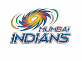
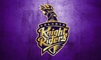
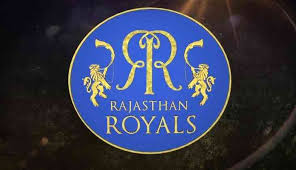
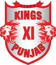
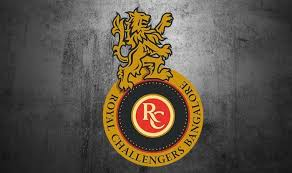
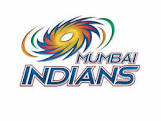
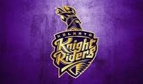
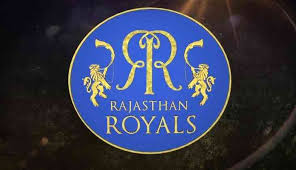
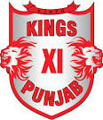
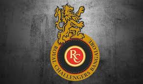
Foundation
On 13 September 2007, the BCCI announced the launch of a franchise-based Twenty20 cricket competition called Indian Premier League whose first season was slated to start in April 2008, in a "high-profile ceremony" in New Delhi. BCCI vice-president Lalit Modi, said to be the mastermind behind the idea of IPL, spelled out the details of the tournament including its format, the prize money, franchise revenue system and squad composition rules. It was also revealed that the IPL would be run by a seven-man governing council composed of former India players and BCCI officials, and that the top two teams of the IPL would qualify for that year's Champions League Twenty20. Modi also clarified that they had been working on the idea for two years and that IPL was not started as a "knee-jerk reaction" to the ICL.The league's format was similar to that of the Premier League of England and the NBA in the United States.
Owners And Coaches
- CSK- N.Srinivas,Stephen
- MI- Reliance,Jayawardene
- SRH- SunNetwork,Moody
- KKR- Shahrukh Khan,Kallis
- KIXP- Preity Zinta,Hodge
- DC- GMR,Ponting
- RR- Manoj Badale,Shane Warne
- RCB- United Spirits Limited,Vettori
TITLE SPONSOR:
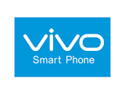About vivo
Vivo Communication Technology Co. Ltd., known as Vivo, is a Chinese technology company owned by BBK Electronics that designs and manufactures smartphones, smartphone accessories, software, and online services, which are then sold in India. The company develops software for its phones, distributed through its Vivo App Store, with iManager included in their proprietary, Android-based operating system, Funtouch OS.